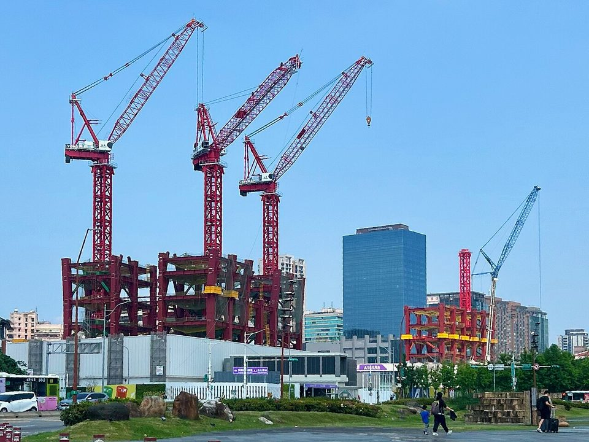
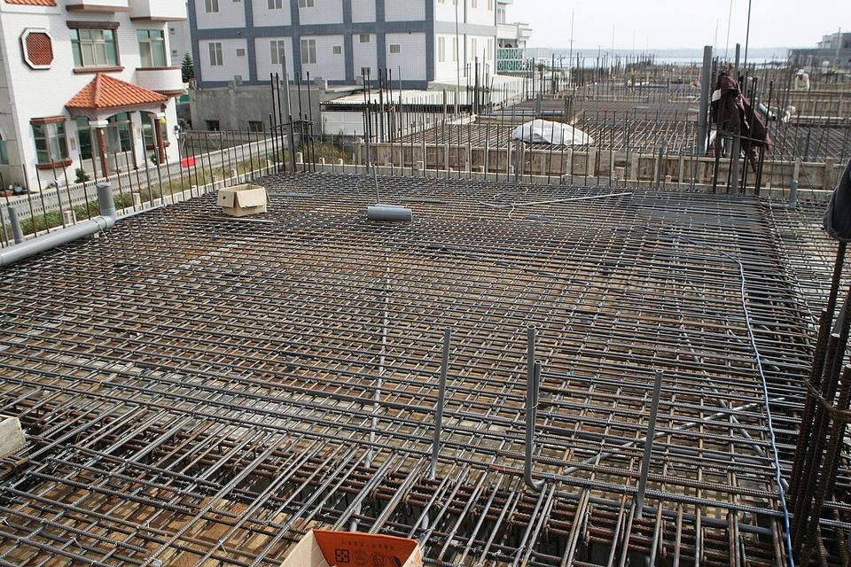
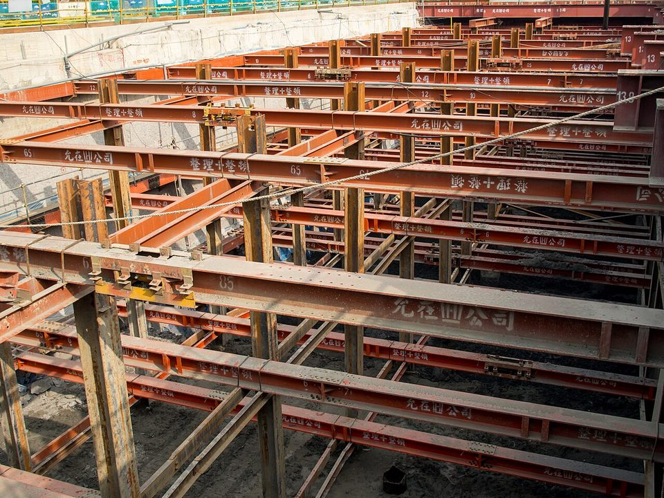

DOWNSTREAM DEMAND · CONSTRUCTION · 2026.09
台灣營建業 9 月觀察：成交回溫、開工谷底，鋼筋漲價靠成本
鋼鐵潮流工作室 · 發布 2026.10.05

本期重點
9 月房市成交明顯回溫、營造工程物價年增率維持 2022 年 7 月以來高點，但真正決定鋼筋用量的新開工仍在谷底。鋼筋盤價上漲是廢鋼成本推動，不是需求拉動；營建用鋼呈現「住宅弱、廠房與公共工程撐住」的分化格局。
- 成交量回溫，基期偏低是主因。 六都 9 月建物買賣移轉 17,945 棟，月增 14.1%、年增 11.6%；但前三季累計 15.16 萬棟，年減 0.1%，全年仍是持平格局。
- 供給端出現斷層。 上半年住宅建照 50,723 宅、年減 28.2%，為 2018 年以來同期最低；使照 68,225 宅，則是十年次高。
- 營建成本漲在工資與機電。 8 月營造工程物價年增 6.54%，工資年增 8.12% 創五年新高；金屬製品年增 6.48%，漲幅反而收斂。
- 鋼筋漲價、需求偏弱。 豐興 9/21 鋼筋基價漲 200 元至每噸 18,300 元，業者坦言「實際鋼筋需求仍偏弱」；型鋼連續 19 週平盤。
關鍵數字
成交量：六都全面月增，但仍是基期效應
| 城市 | 月增 | 年增 |
|---|---|---|
| 台北市 | +21.7% | +20.2% |
| 新北市 | +12.1% | +10.2% |
| 桃園市 | +13.8% | +9.0% |
| 台中市 | +18.3% | +7.1% |
| 台南市 | +8.3% | −4.0% |
| 高雄市 | +10.2% | +28.5% |
| 六都合計 | +14.1% | +11.6% |
房仲業者將 9 月回溫歸因於三點：8 月受暑假出遊、颱風與民俗月影響，移轉量僅 15,723 棟，基期偏低、部分遞延過戶完成，以及新成屋陸續交屋。央行將第二戶貸款成數上限由六成放寬到七成，新青安 3.0 也提供支撐，但業者也提醒「貸款成數放寬並不代表銀行授信同步轉為寬鬆」，對第四季的看法是「量小增、價平」。
從鋼鐵角度看，移轉棟數反映的是過去幾年蓋好的房子在過戶，對當下的用鋼需求幾乎沒有直接貢獻。要判斷未來的鋼筋用量，得看建照與開工。
供給斷層：建照新低、使照高峰
建照是未來需求，使照是過去需求的終點。兩者交叉，代表建商推案轉趨保守，同時市場正在消化三到五年前房市熱絡時規劃的建案。今年第一季全台住宅開工戶數已由 33,335 戶降到 20,920 戶，年減 37.2%。
住宅鋼筋用量集中在開工後的基礎與結構體階段，一般落在取得建照後半年到一年多之間。上半年建照大幅下滑，意味著住宅用鋼筋的需求缺口會在 2026 年第四季到 2027 年逐步浮現。

營建成本：壓力從材料轉向人力
營造成本壓力正由材料端向勞務端擴散。主計總處綜合統計處科長蔡秀慧說明，營建工作辛苦、年輕世代投入意願低，現有勞工年齡偏高，勞動供給受限；同時國內投資增加、新建廠房拉高人力需求，供需兩頭推升工資。勞務類年增 6.45% 創四年半新高，其中工資年增 8.12% 創五年新高；材料端漲最多的是塑膠、機電與瀝青，金屬製品則從 7 月的 8.3% 收斂到 6.48%。
這表示建商的成本壓力主要不在鋼材。鋼廠調漲盤價的空間，取決於廢鋼與能源成本，而不是營建景氣；反過來，營建需求轉弱時，鋼材也難以靠成本轉嫁守住價格。
鋼價：廢鋼推動、需求偏弱
| 品項 | 每噸價格 | 調整 |
|---|---|---|
| 廢鋼收購價 | 9,800 元 | 平盤，結束連三週上漲 |
| 鋼筋基價 | 18,300 元 | +200 元 |
| 型鋼牌價 | 25,000 元 | 平盤，連續 19 週持平 |
豐興表示，前一週廢鋼上漲帶動鋼筋看漲買氣，全台都有成交，但「實際鋼筋需求仍偏弱」。這是典型的成本推動行情：下游趁漲價前補庫存，真正的工地用量沒有同步增加。鋼筋與廢鋼的價差約每噸 8,500 元，電爐廠的利潤空間仍取決於國際廢鋼與電價走勢。
型鋼連續 19 週平盤，反映另一種需求結構：大型鋼構案多以專案議價，價格不隨週盤波動。
需求結構：住宅弱、廠房與公共工程撐住
| 需求來源 | 動能 | 主要鋼品 |
|---|---|---|
| 住宅 | 開工低迷，轉弱 | 鋼筋 |
| AI／半導體廠房、資料中心 | 強 | H 型鋼、厚板、鋼構、機電用鋼 |
| 能源（離岸風電、電網、儲能） | 穩定成長 | 厚板、鋼管、電磁鋼片 |
| 公共工程（交通、社宅、治水） | 持穩 | 鋼筋、型鋼、鋼板樁 |
動能為本刊依主計總處說明（國內投資與建廠需求增加）及產業報導綜合判斷。

對鋼鐵業的意涵
- 電爐長條鋼廠首當其衝。 豐興、威致、東和等以鋼筋與型鋼為主的電爐廠，最直接承受住宅開工下滑。產品若能偏向鋼構用型鋼、高強度鋼筋與續接器等工程用品，較能抵抗住宅循環。
- 中鋼看廠房與能源工程。 中鋼在營建領域以厚板與熱軋鋼捲為主，子公司中鋼構承攬鋼構工程，受惠於廠房、離岸風電與電網建設；但工程受缺工牽制，接單與交貨節奏可能遞延。
- 缺工讓需求遞延，而非消失。 工資上漲與工期拉長，會讓用鋼需求往後移，也讓建商更傾向採用預鑄、鋼構等省工工法，對鋼構用鋼是結構性利多。
- 價格不能只看盤價。 鋼筋盤價上漲若缺乏實際需求支撐，容易在國際廢鋼回落時跟著回檔；觀察成交量與庫存，比觀察盤價更能判斷景氣。
第四季展望
房市方面，業者預期第四季「量小增、價平」，若央行信用管制鬆綁延續，全年移轉量有機會轉為正成長。但對鋼鐵業而言，關鍵在開工而非成交：住宅開工尚未見底跡象，鋼筋需求偏弱的格局可能延續到明年；型鋼與厚板則由廠房、能源與公共工程支撐，相對穩定。
觀察重點
- 鋼筋盤價能否守住每噸 18,000 元，以及國際廢鋼報價走勢。
- 內政部第三季建照與開工數據，確認住宅開工是否觸底。
- 營造工資年增率能否從 8% 降溫，缺工是否緩解。
- 央行第四季理事會是否進一步調整信用管制。
- AI 廠房、資料中心與電網建設的發包與施工進度。
資料來源
- 9月六都買賣移轉回穩 前三季追近去年同期（工商時報，2026-10-01）
- 六都房市交易量全面回升！9月量增14.1% 房仲預測Q4「量小增、價平」（住展，2026-10-01）
- 9月房市交易量回升高雄最靚 六都建物買賣移轉棟數月增14%（鉅亨網，2026-10-01）
- 建照寫新低、使照衝十年次高 預售屋供需死亡交叉（經濟日報，2026-08-14）
- Q1全台建照量年減30.0% 新屋開工量縮37.2%（理財周刊，2026-05-15）
- 營造成本壓力未退 工資年漲8.12%五年最高（聯合報，2026-09-09）
- 豐興鋼筋漲價200元 惟需求仍偏弱（工商時報，2026-09-21）
- 廢鋼行情走揚刺激鋼筋看漲買氣 豐興調高鋼筋盤價（鉅亨網，2026-09-21）
內容僅供產業資訊參考，不構成投資建議。新聞版權屬原出處所有。